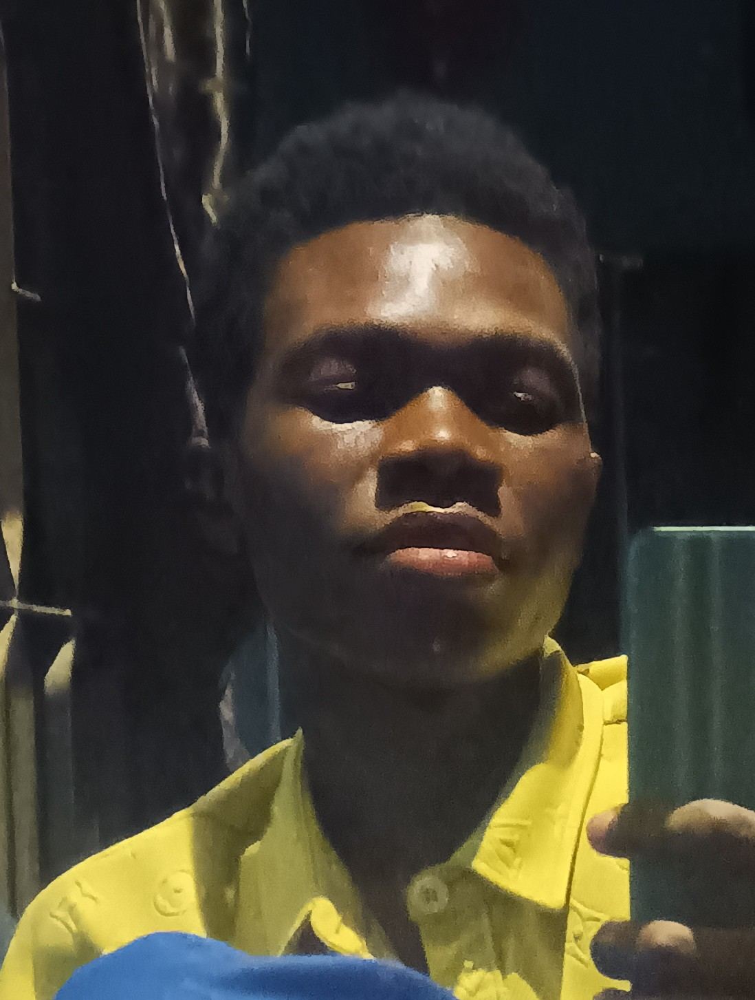

I am a passionate and dedicated Computer Science student at Akanu Ibiam Federal Polytechnic, currently in my ND2 level, with a strong interest in web design and development.
I began my academic journey in 2024 and have since developed solid skills in HTML, CSS, and JavaScript, which I use to create clean, responsive, and user-friendly websites.
I enjoy solving problems through code and continuously challenge myself to learn new technologies and improve my craft.
Beyond technical skills, I value effective communication and teamwork, as I believe collaboration is key to building successful projects.
Although I am still growing in the field, I am highly motivated to gain practical experience and contribute to real-world web development solutions.
My goal is to become a skilled web designer who creates impactful and visually appealing digital experiences.